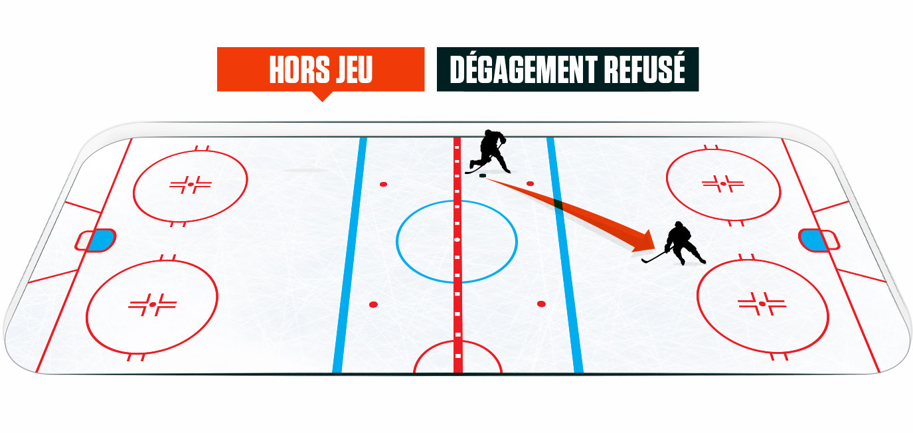
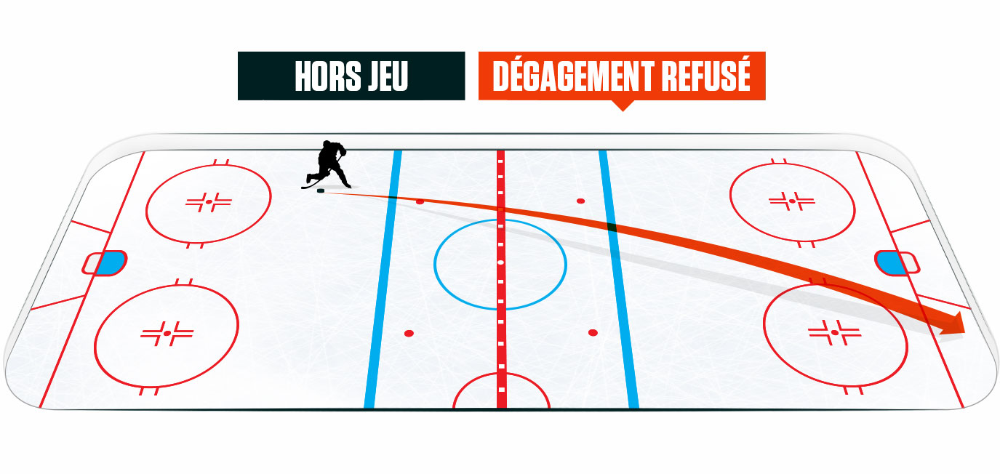

L’objectif du hockey est simple : compter plus de buts que votre adversaire. Il est interdit d’utiliser ses patins pour compter un but et de diriger
la rondelle de manière intentionnelle avec quelque partie du corps que ce soit.En période réglementaire, chacune des deux équipes compte six joueurs
sur la glace, soit trois attaquants, deux défenseurs et un gardien de but. Les parties de la Ligue nationale comptent trois périodes de 20 minutes chacune.
Si le score est nul après 60 minutes de jeu, une période supplémentaire de cinq minutes est ajoutée, et la première équipe qui compte remporte le match.
Si le score est toujours nul après cette période supplémentaire, ce sont les tirs de barrage qui permettront de désigner un gagnant. Le corps d’arbitrage
des matchs de la LNH est composé de deux arbitres et de deux juges de ligne. Ils arrêtent le jeu lorsqu’ils infligent des pénalités, en cas de hors-jeu ou
pour refuser un dégagement.
Lorsqu'un but est compté, une sirene se fait entendre.
Hors-jeu : Lorsque des joueurs pénètrent la zone offensive avant la rondelle.

Dégagement refusé : Lorsqu’une équipe lance la rondelle depuis son côté de la ligne rouge au-delà de la ligne des buts de l’équipe adverse.
